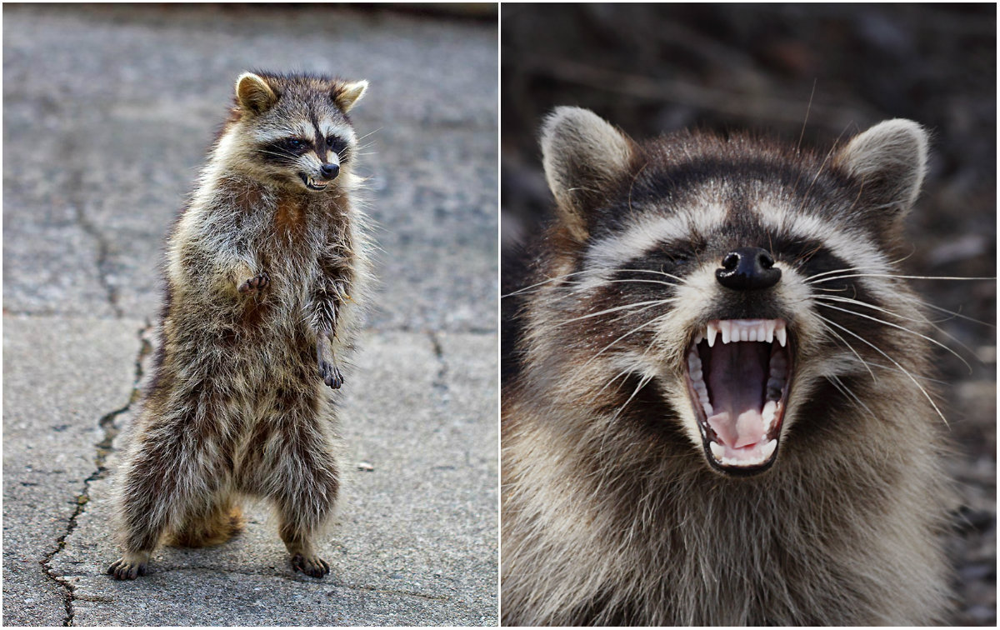

<!-- alt é uma descrição de imagem para ser usado por buscadores web -->
<!-- no src, ".." simboliza por buscas fora da pata atual deste arquivo, já "." busca na mesma pasta -->
<br />

<audio controls>
  <source src="../Files/audio.mp3" type="audio/mpeg" />
</audio>

<br />

<video controls>
  <source src="../Files/video.mp4" type="video/mp4" />
</video>
